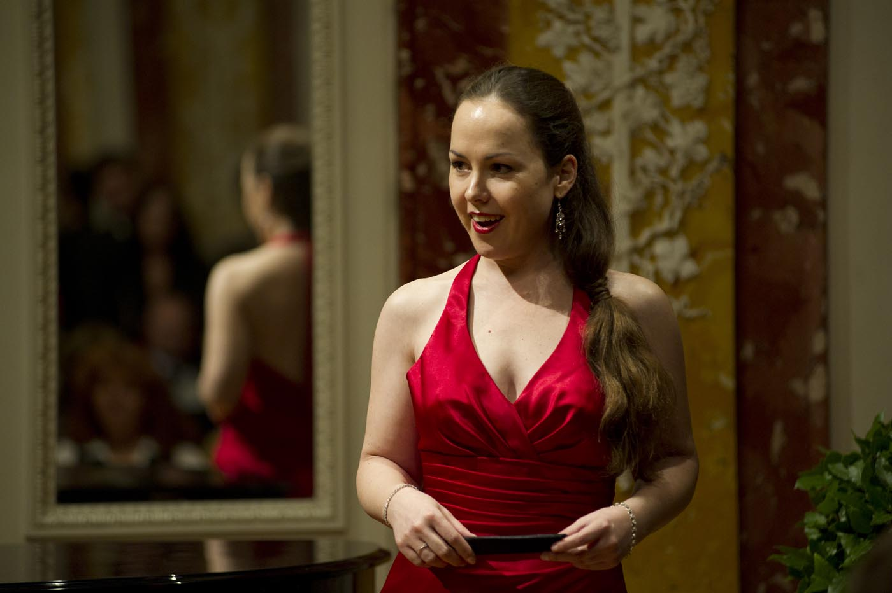

STILL 01 · SÄNGERIN01 — Auf der Bühne
Sängerin.
Singen ist meine Leidenschaft, meine Berufung, meine persönlichste Ausdrucksform. Für Partien, die für die dunklere, tiefe, schwere Frauenstimme gedacht sind — stehe ich Ihnen zur Verfügung.
Oper, Operette, Konzert. Mezzosopran mit dramatischer Färbung.